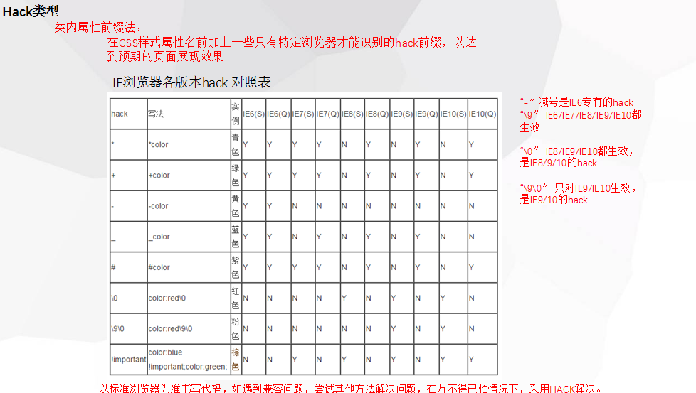

CSS Hack
简单了解Hack
Hack是CSS上的1种机制、是让不同的浏览器兼容css的样式、主要应用在IE上
不同厂商的浏览器或者某浏览器的不同版本
(例如IE6-11、Firefox、Safari、Opera、Chrome)
对CSS的支持，解析不一样，导致在不同浏览器的环境中呈现出不一样的页面展现
效果、获得统一的页面效果，就需要针对不同的浏览器或不同的版本写特定的CSS
样式针对不同的浏览器/不同的版本写的响应的CSS code的过程、称为CSS Hack
Hack 类型
Hack是CSS上的1种机制、是让不同的浏览器兼容css的样式、主要应用在IE上
不同厂商的浏览器或者某浏览器的不同版本
(例如IE6-11、Firefox、Safari、Opera、Chrome)
对CSS的支持，解析不一样，导致在不同浏览器的环境中呈现出不一样的页面展现效
果、获得统一的页面效果，就需要针对不同的浏览器或不同的版本写特定的CSS样式
针对不同的浏览器/不同的版本写的响应的CSS code的过程、称为CSS Hack！
Hack 类型
条件注释法:
<!--[if IE 6]><[endif]>-->
<!--[if IE 6]>
//指定只能在IE6上才能渲染
可以写html标签
可以写script代码
注：如果写script会遵守从上再下的原则
<![endif]>-->
<!--[if IE]>-->//指定只能在IE上才能渲染
<!--[if ! IE8]>-->//指定非在IE8上才能渲染、也只能是在IE8下
类内属性前缀法
css样式属性名前加上一些浏览器特定才能识别前缀
_.box{} ie6
注：
_.box{background-color:red;}
.box{background-color:blue;}
如果希望DIV在IE6上是红色，其它是绿色，这样写是不行的
因为在IE6解析的时候，第一句能够识别，背景设为红色
但是第二句所有浏览器都识别，IE6也不例外
背景颜色又被设为绿色，所以得反过来写
正确写法
.box{background-color:red;}
_.box{background-color:red;}
总结出的规律就是：先一般，再特殊
出处
http://www.cnblogs.com/dolphinX/p/3292630.html
这个也可以参考参考
http://www.w3cplus.com/css/browser-hacks.html
标注法
注：IE都能识别 * ； 标准浏览器不能识别 *；
IE6能识别 * ; 不能识别 ！important;
IE7能识别 * ；但不能识别 ！important;
主流浏览器 能识别 ！important; 但不能识别 * ；
浏览器优先级 FF(火狐)<IE<IE6 所以一般的书写顺序为FF IE7 IE6
\0 IE8/9都认识 \9 所有IE都认识
.css:*+background:; [FOR ie7] ps:*使用性更高
待补充
出之锤爷：QQ1621515868
er、以前看过、没时间11总结、有时间补、sosorry

以后也补这个
扩充：
CSS内部属性级Hack
语法：selector{
练习
111111111
JavaScript一种直译式脚本语言，是一种动态类型、弱类型、基于原型的语言，内置支持类型。它的解释器被称为JavaScript引擎，为浏览器的一部分，广泛用于客户端的脚本语言，最早是在HTML（标准通用标记语言下的一个应用）网页上使用，用来给HTML网页增加动态功能。 为了取得技术优势，微软推出了JScript，CEnvi推出ScriptEase，与JavaScript同样可在浏览器上运行。为了统一规格，因为JavaScript兼容于ECMA标准，因此也称为ECMAScript。 在1995年时，由Netscape公司的Brendan Eich，在网景导航者浏览器上首次设计实现而成。因为Netscape与Sun合作，Netscape管理层希望它外观看起来像Java，因此取名为JavaScript。但实际上它的语法风格与Self及Scheme较为接近。